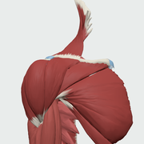
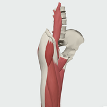
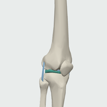

Interactive anatomy
Anatomy Atlas
โมเดล 3D สำหรับอธิบายคนไข้ เลือกข้อที่ต้องการ

ไหล่ · Shoulder
Approach + กายภาพ · 18 tests

สะโพก · Hip
Approach + กายภาพ · เส้นประสาท · 9 tests

เข่า · Knee
Approach + กายภาพ · ACL/PCL · 13 tests